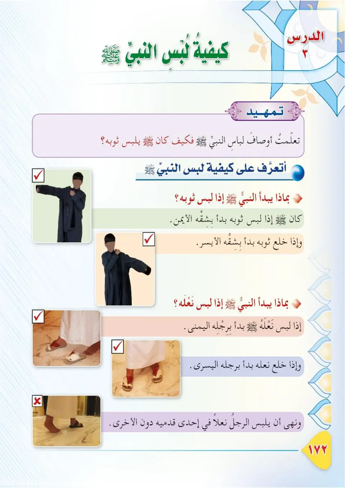
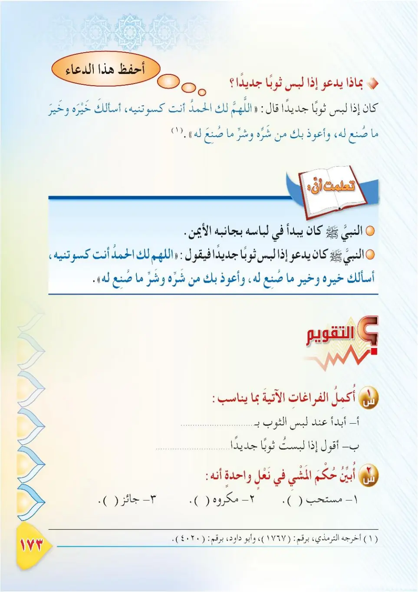

Stage 3·المرحلة الثالثة📖 Unit 5
كَيْفِيَّةُ لِبْسِ النَّبِيِّ ﷺ How the Prophet ﷺ Wore His Clothes
From the Textbookpp. 173–174


الرسولُ ﷺ قدوةٌ في كلِّ شيءٍ؛ فحتى في لبسِ الثوبِ كان له ﷺ كيفيَّةٌ وسُننٌ. فلنتعرَّفْ — في هذا الدرسِ — على بعضِ سُننِ النبيِّ ﷺ في لبسِ الثيابِ.
Ar-rasulu ﷺ qudwatun fi kulli shay'; fahatta fi lubsi ath-thawb kana lahu ﷺ kayfiyyatun wa sunan. Falnata'arraf — fi hadha ad-dars — 'ala ba'di sunani an-nabiyyi ﷺ fi lubsi ath-thiyab.
The Messenger ﷺ is an example in everything; even in wearing clothes he had a particular way and sunan. In this lesson, let us learn about some of the Prophet's ﷺ sunan in wearing clothes.
தூதர் ﷺ அனைத்திலும் முன்மாதிரி. உடை அணிவதிலும் அவர்களுக்கு வழிமுறைகள் இருந்தன. இந்தப் பாடத்தில் உடை அணிவதில் நபி ﷺ அவர்களின் சில சுன்னத்களை அறிவோம்.
عن أبي سعيدٍ الخُدْريِّ رضي الله عنه أنَّ النبيَّ ﷺ كان إذا استجدَّ ثوبًا سمَّاه باسمِه: عمامةً، أو قميصًا، أو رداءً، ثمَّ يقولُ: «اللهمَّ لك الحمدُ، أنتَ كسوتَنيه، أسألُك خيرَه وخيرَ ما صُنعَ له، وأعوذُ بك من شرِّه وشرِّ ما صُنعَ له». رواه أبو داود والترمذي.
'An Abi Sa'idin al-Khudriyya radiyallahu 'anhu anna an-nabiyya ﷺ kana idha istajadda thawban sammahu bis-mih: 'imamatan, aw qamisan, aw rida', thumma yaqul: «Allahumma laka al-hamdu, anta kasawtanih, as'aluka khayrah wa khayra ma suni'a lahu, wa a'udhu bika min sharrih wa sharri ma suni'a lahu». Rawahu Abu Dawud wa at-Tirmidhi.
Abu Sa'id al-Khudri, may Allah be pleased with him, reported that whenever the Prophet ﷺ put on a new garment he would name it—a turban, shirt, or cloak—then say: "O Allah, praise is due to You; You have clothed me with it. I ask You for its goodness and the goodness for which it was made, and I seek refuge in You from its evil and the evil for which it was made." Narrated by Abu Dawud and At-Tirmidhi.
அபூ ஸயீத் அல்குத்ரி (ரலி) அறிவிக்கிறார்: நபி ﷺ புதிய உடை அணிந்தபோது அதைப் பெயரிட்டு—இமாமா, கமீஸ், அல்லது ரிதா என—அழைத்து கூறுவார்கள்: "இறைவா! உனக்கே புகழ். நீயே எனக்கு இதை உடுத்தினாய். இதன் நன்மையையும், இது எதற்காக உருவானதோ அதன் நன்மையையும் கேட்கிறேன். இதன் தீமையிலிருந்தும், இது எதற்காக உருவானதோ அதன் தீமையிலிருந்தும் உன்னிடம் பாதுகாப்பு தேடுகிறேன்." (அபூதாவூத், திர்மிதி)
ماذا نستفيدُ من هذا الحديثِ؟ ١- الدعاءُ عندَ لبسِ الثوبِ الجديدِ؛ وشكرُ اللهِ على نعمتِه. ٢- سنَّةُ تسميةِ الثوبِ؛ عمامةً كانتْ أو قميصًا أو رداءً. ٣- اللباسُ نعمةٌ من نعمِ اللهِ، قال تعالى: «وَجَعَلَ لَكُمْ سَرَابِيلَ تَقِيكُمُ الْحَرَّ».
Madha nastafeedu min hadha al-hadith? 1. ad-du'a'u 'inda lubsi ath-thawbi al-jadid; wa shukru Allahi 'ala ni'matih. 2. sunnatu tasmiyati ath-thawb; 'imamatan kanat aw qamisan aw rida'. 3. al-libasu ni'matun min ni'ami Allah, qala ta'ala: «Wa ja'ala lakum sarabila taqeekum al-harr».
What do we learn from this hadith?
1. Supplication when wearing a new garment, and thanking Allah for His blessing.
2. The Sunnah of naming the garment, whether it is a turban, shirt, or cloak.
3. Clothing is one of the blessings of Allah; He said: "And He made for you garments to protect you from the heat."
இந்த ஹதீஸிலிருந்து என்ன பயன்?
1. புதிய உடை அணியும்போது துஆ செய்வது; அருட்கொடைக்கு அல்லாஹ்வுக்கு நன்றி கூறுவது.
2. உடையைப் பெயரிட்டு அழைப்பது சுன்னத்; இமாமா, கமீஸ், ரிதா எதுவாக இருந்தாலும்.
3. உடை அல்லாஹ்வின் அருட்கொடைகளில் ஒன்று. அல்லாஹ் கூறினான்: "சூட்டிலிருந்து உங்களைக் காக்கும் உடைகளை உங்களுக்கு ஆக்கினான்."
آدابُ لبسِ الثوبِ: ١- البدءُ باليمينِ عندَ اللبسِ. ٢- البدءُ بالشمالِ عندَ الخلعِ (نزعِ الثوبِ). ٣- التَّسميةُ، ثمَّ الشكرُ للهِ عندَ الفراغِ من اللباسِ.
Adabu lubsi ath-thawb: 1. al-bad'u bil-yamine 'inda al-lubs. 2. al-bad'u bish-shimali 'inda al-khal' (naz'i ath-thawb). 3. at-tasmiyah, thumma ash-shukru lillahi 'inda al-faragha mina al-libas.
Etiquettes of wearing clothes:
1. Start with the right side when putting on clothes.
2. Start with the left side when taking clothes off.
3. Say Bismillah, then thank Allah after putting on clothes.
உடை அணிவதற்கான வழிமுறைகள்:
1. அணியும்போது வலது பக்கத்திலிருந்து தொடங்குவது.
2. கழற்றும்போது இடது பக்கத்திலிருந்து தொடங்குவது.
3. பிஸ்மில்லாஹ் கூறி, உடை அணிந்தபின் அல்லாஹ்வுக்கு நன்றி கூறுவது.